原始 CAD、发行碰撞模型与手物接触
旧工程回归有 11 段录像的物体全局双向表面误差第 95 百分位超过 5 mm。这里逐段核对，8 段有同实例的官方碰撞资产；其余 3 段保留原 CAD 和历史回放。两段录像用了同一只水壶。
每行取靠近源接触点中位位置的一个实际材料点，沿物体坐标的三个轴切开。深蓝线是 HOT3D 原 CAD 截面。橙线是发行凸块在截面上的并集边界。绿色是高置信源接触点，箭头沿 CAD 面片法向。点和箭头只显示距离截面 3 mm 以内的观测。
紫红叉号是旧版 Shadow 固定动作回放中，产生正法向力并已投影到 CAD 的接触点。紫色加号是未映射的原始碰撞见证点。数据按原视频时钟采样。距离数值覆盖完整源接触区，图像只显示三个切面。点击各图可打开原始分辨率。
clip-002778 · carton_oj
该实例缺少官方发行的碰撞模型，图中只绘制原始 CAD 截线。历史受力点来自当时的仿真模型。
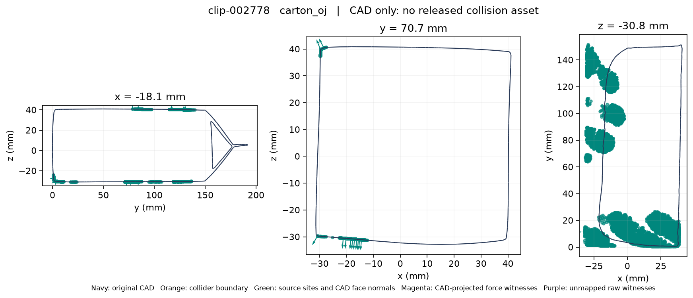
clip-002340 · can_soup
发行资产包含 256 个凸块。源接触区到发行碰撞表面的距离，第 95 百分位为左手接触区 0.40 mm、右手接触区 0.47 mm、支撑接触区 1.00 mm。
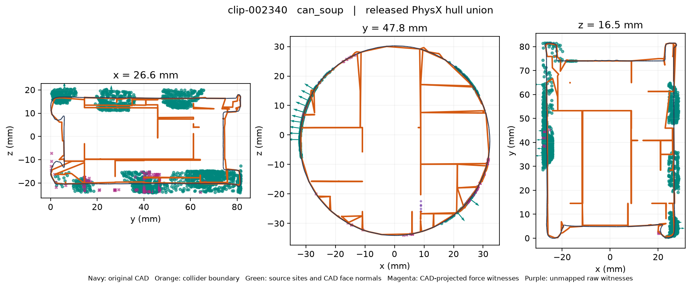
clip-003297 · flask
发行资产包含 256 个凸块。源接触区到发行碰撞表面的距离，第 95 百分位为右手接触区 1.54 mm、支撑接触区 2.12 mm。
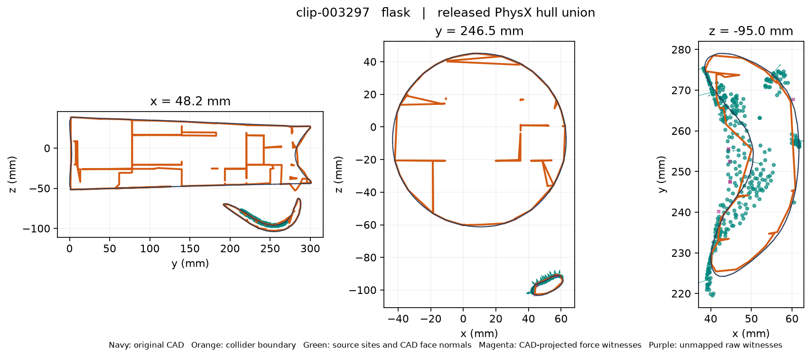
clip-003033 · coffee_pot
发行资产包含 256 个凸块。源接触区到发行碰撞表面的距离，第 95 百分位为右手接触区 1.19 mm。
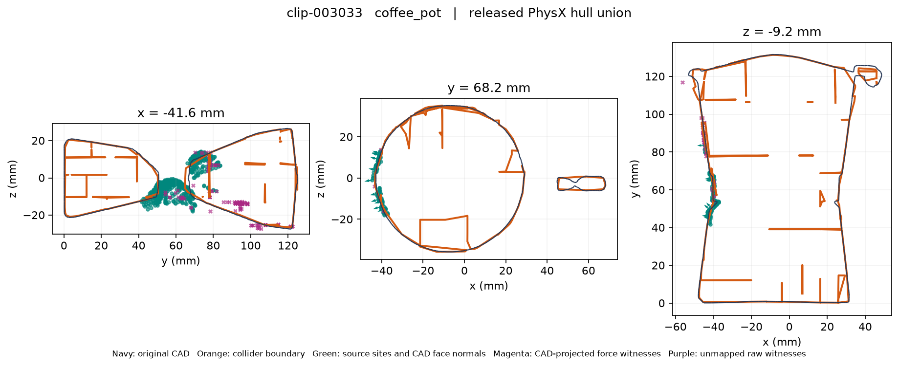
clip-003329 · dumbbell_5lb
发行资产包含 256 个凸块。源接触区到发行碰撞表面的距离，第 95 百分位为左手接触区 0.90 mm、支撑接触区 0.72 mm。
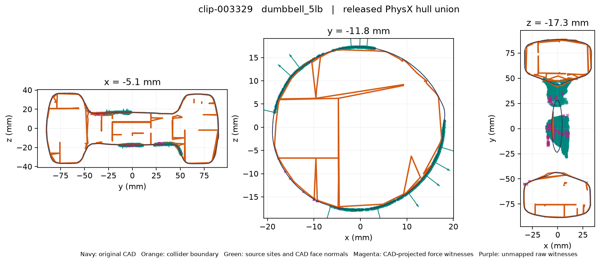
clip-002103 · mouse
发行资产包含 255 个凸块。源接触区到发行碰撞表面的距离，第 95 百分位为右手接触区 0.52 mm、支撑接触区 0.54 mm。
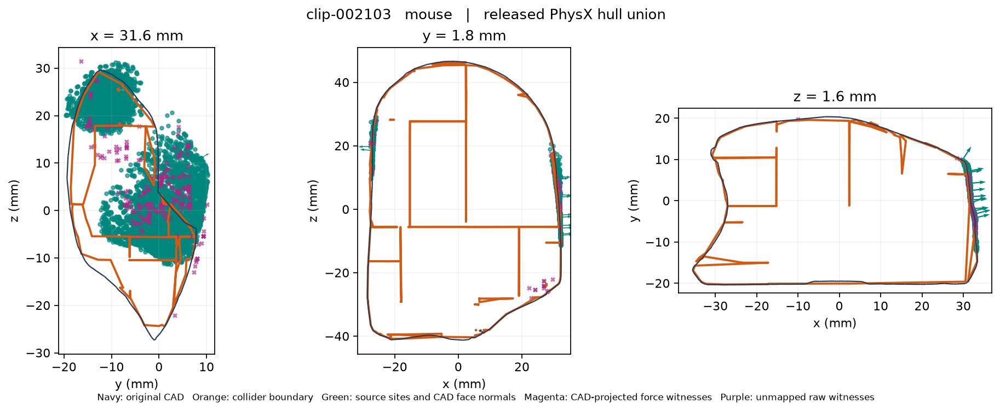
clip-001191 · bottle_bbq
发行资产包含 256 个凸块。源接触区到发行碰撞表面的距离，第 95 百分位为左手接触区 0.87 mm、右手接触区 0.66 mm。
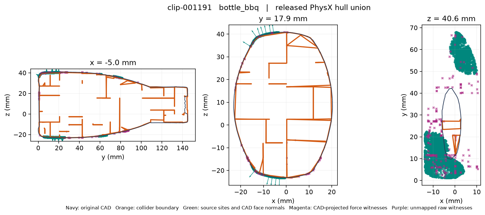
clip-000373 · bottle_mustard
该实例缺少官方发行的碰撞模型，图中只绘制原始 CAD 截线。历史受力点来自当时的仿真模型。
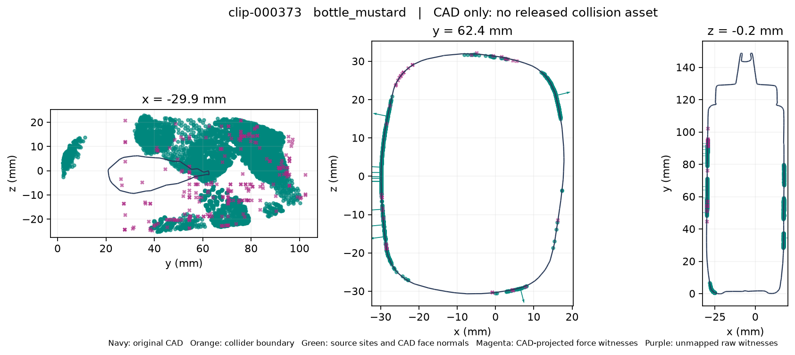
clip-001127 · can_tomato_sauce
该实例缺少官方发行的碰撞模型，图中只绘制原始 CAD 截线。历史受力点来自当时的仿真模型。
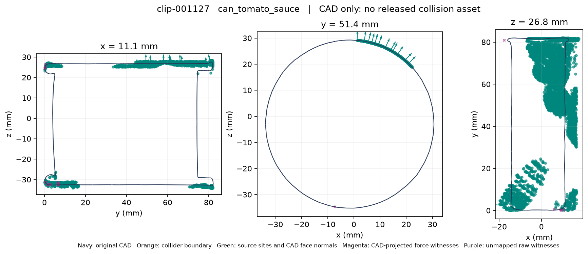
clip-001193 · dino_toy
发行资产包含 256 个凸块。源接触区到发行碰撞表面的距离，第 95 百分位为左手接触区 1.58 mm、右手接触区 1.19 mm。
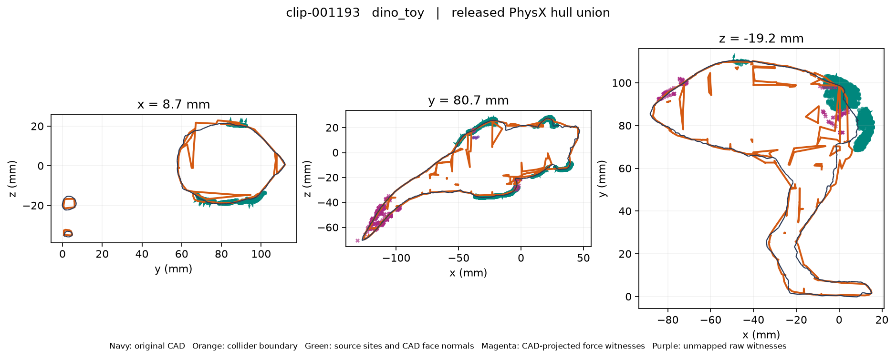
clip-001134 · flask
发行资产包含 256 个凸块。源接触区到发行碰撞表面的距离，第 95 百分位为右手接触区 1.32 mm、支撑接触区 1.48 mm。
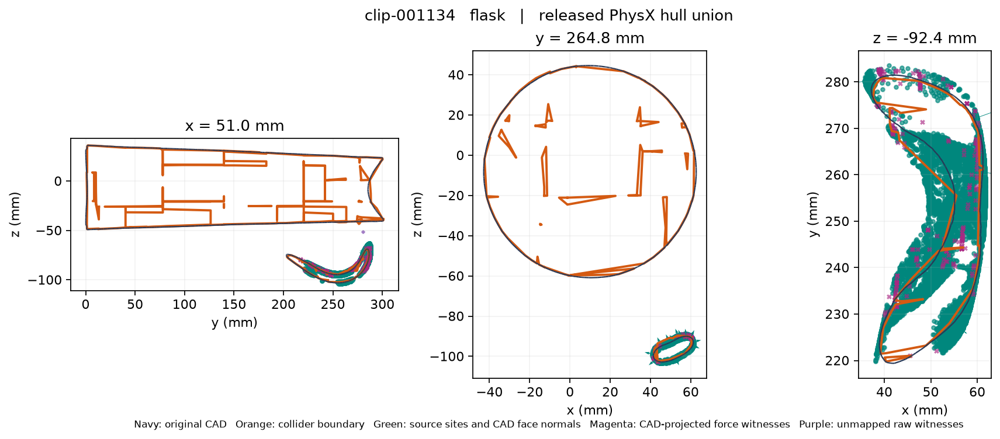